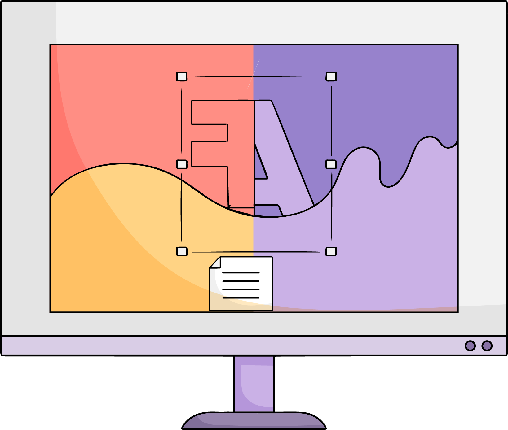
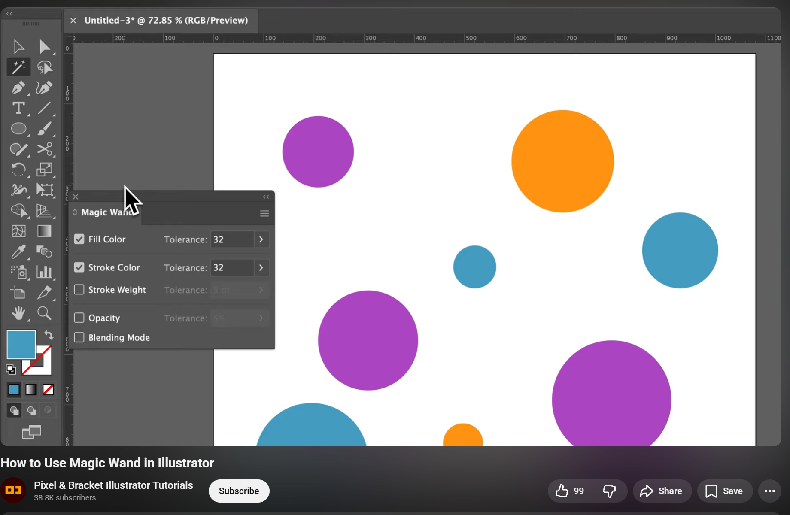
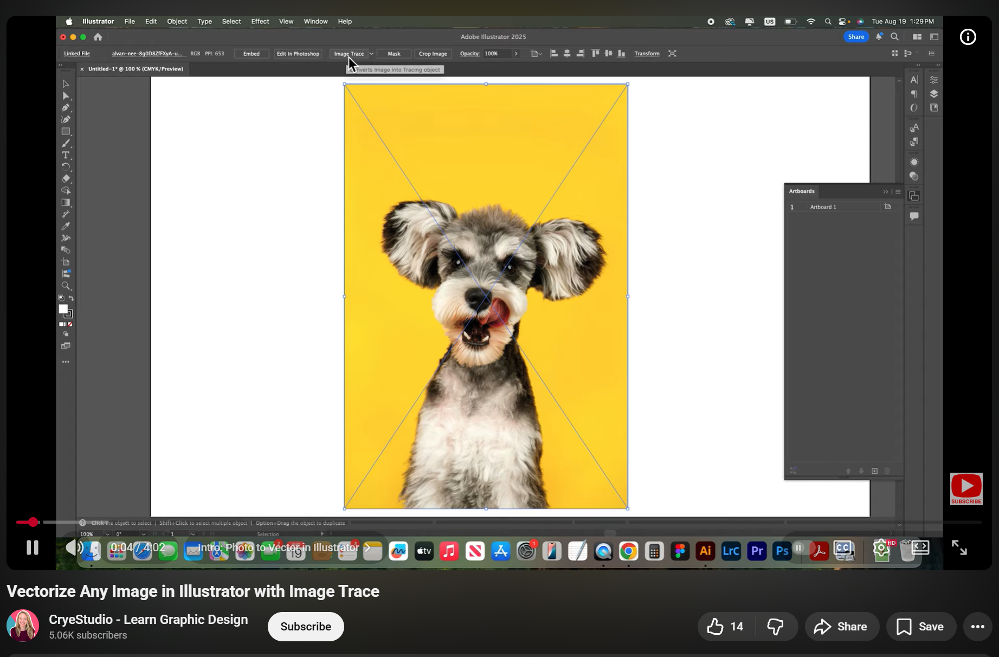
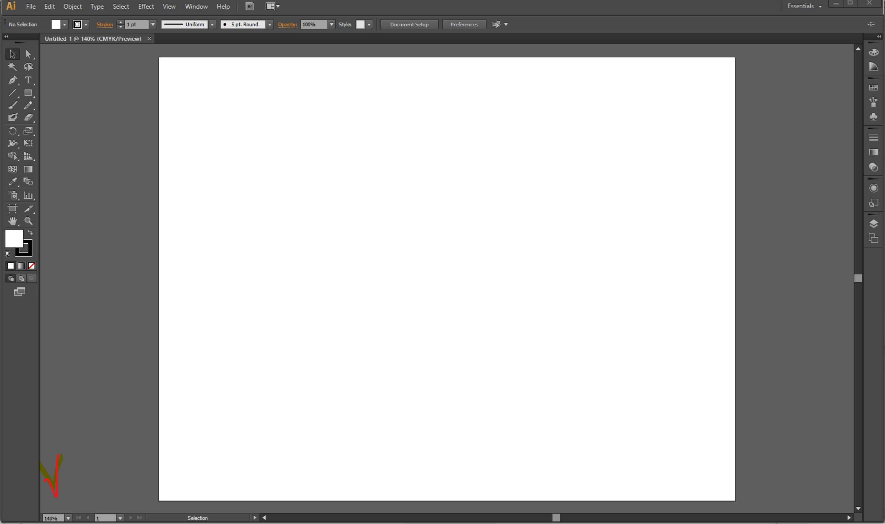

Context
Previous Experience: Adobe Fireworks
New Tool Selected: Adobe Illustrator (First Time User)
I am attempting to design the Corporate Identity Business Card (Exercise 5) using Adobe Illustrator. Below is a log of my experience, struggles, and the "pain points" I encountered shifting from a screen-based tool (Fireworks) to a vector/print tool (Illustrator).
Experience Log & Pain Points
-
Struggle 1: Changing Page Orientation
Pain Point: I couldn't find a simple "Canvas Size" or "Page Properties" menu like in Fireworks. I expected to just click the canvas and change it to Landscape.
Solution: I had to search online and found a video (YouTube Guide) that explained I needed to use the Artboard Tool (Shift+O) or the Properties panel to rotate the page. This was not intuitive.  -
Struggle 2: Magic Wand Tool Behavior
Pain Point: In Fireworks, the Magic Wand selects pixels based on color. In Illustrator, I clicked it expecting the same, but it selected entire objects that shared the same fill color/attributes across the whole document. It works on vector attributes, not pixels, which was confusing at first. Discovery: After some trial and error, I learned that the Magic Wand in Illustrator is for selecting objects with similar attributes (fill color, stroke color, opacity) vs adobe firework, selecting pixels in a bitmap environment, often used for background removal.  -
Struggle 3: Vectorizing Images (Image Trace)
Pain Point: I needed to convert the raster logo to vectors. In Fireworks, I usually have to trace manually or use external tools. I wasn't sure if Illustrator could do it automatically. Discovery: I discovered the "Image Trace" feature, which automatically vectorized the image. This was a huge advantage over Fireworks, which (to my knowledge) doesn't have a native auto-trace feature this powerful.  -
Struggle 4: Zooming and Panning
Pain Point: In Fireworks, holding down the ctrl key while scrolling zooms in and out. In Illustrator, this behavior is different, and I had to learn to use the Zoom Tool (Z) or the navigator panel. Discovery: I discovered the zooming feature, is not the same as fireworks which made the learning curve a bit steeper as i am used to the ctrl + scroll zooming feature. CTRL + Scrool in Illustrator move the canvas left and right instead of zooming in and out. 
Comparison: Fireworks vs. Illustrator
What was Harder?
Navigation and Setup: Simple tasks like rotating the page (Orientation) required watching a tutorial. The interface separates "Artboards" from "Document Setup," whereas Fireworks just has a Canvas. Selection: The difference between selecting an object and selecting points (Direct Selection) is strict in Illustrator, whereas Fireworks is more forgiving.
What was Easier?
Vectorizing: The Image Trace feature made converting almost an image into a scalable vector instant. In Fireworks, this would have been a manual process.
Learnability Assessment
Time Taken: 2 hours.
Could it be more learnable?
Yes. For a user coming from other Adobe software, the terminology is inconsistent (Artboards vs Canvas). The tool icons (like Magic Wand) look the same but behave completely differently (Vector Attribute selection vs Pixel selection), which leads to errors. A more guided onboarding or tooltips explaining these differences would enhance learnability.